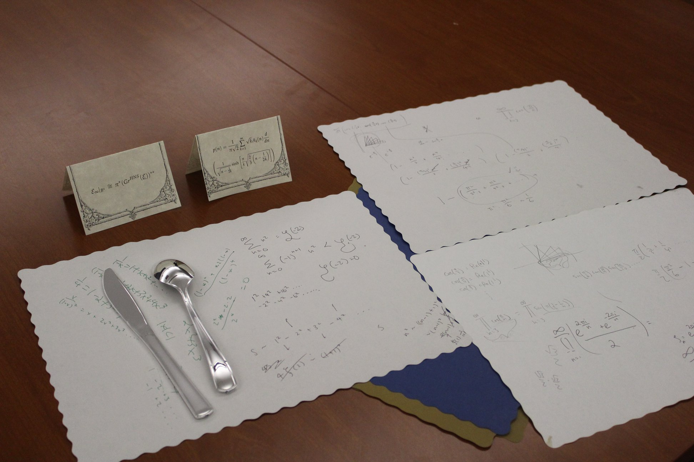
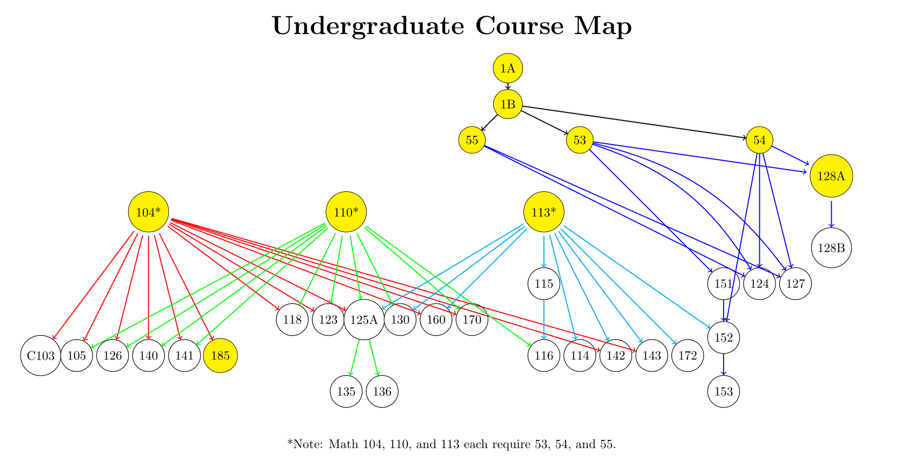

Exposition and Course Help
Course Notes
MUSA maintains course notes for use by their undergrduates. The goal is to create easy-to-read summaries of core undergraduate courses, complete with examples and practice problems.
If you'd like to see notes for a course you're taking or have taken, contact us at musa@math.berkeley.edu or message us on Facebook!
- Math 185: Complex Analysis
Undergraduate Course Map
Black arrows indicate the lower-division courses, and other colors are for upper-division courses. These include official prerequisites as well as recommended ones.
Interactive Undergraduate Course Map
Graduate Course Map
Generously provided by u/Devilnaht on Reddit
Disclaimer: these only include official prerequisites. Different professors may vary the content semester to semester and thus have different requirements.

Exam Banks
LaTeX Tutorials
LaTeX is a typesetting software which is commonly used in technical writing, including formatting mathematics. MUSA holds a LaTeX workshop once per semester, but if you missed it or need more information, give these guides a try:
- Art of Problem Solving's Guide to LaTeX
- LaTeX: Mathematics on Wikibooks
- Harvard Math Department's TeX Intro
- Guide to Commutative Diagram Packages
Featured Problems
At MUSA, we love to talk about tricky math problems of all levels! Here's some of our favorite problems. If you can't figure them out yourself, try asking at office hours and see if anyone else can make heads or tails of them.
Topological invariants and the open mapping theorem
Prerequisite: Math 185; Math 142 or Math 202A will help
Say that a metric space X is locally connected if for each point x of X there is a connected open set U containing x. Let K be a locally connected compact subset of the complex plane C and V(K) denote the vector space of all holomorphic functions V(K) → C. Give a formula for the dimension of V(K) in terms of topological invariants of K.
If that was pretty easy, what happens if K is not locally connected? In particular, what is the dimension of V(K), for K the Cantor set?
Fractal topology
Prereqs: Math 104
If X is a metric space, say that X has a fractal topology if, for each nonempty open set U in X, there is a homeomorphism from U to X. What's an example of X?
Cuboids on the sphere
Prereqs: None
Let S^2 denote the 2-sphere. Describe the space of cuboids (that is, rectangular prisms) whose vertices are all points on S^2.
Prison break!
Prereqs: None
There are N prisoners in a circular prison; each isolated in their own soundproof prison cell. Each prisoner is given a button and a switch; the button controls the lightbulb in the prisoner one cell clockwise from the button-holder. When a prisoner presses their button, the corresponding lightbulb will flash on and then off at the coming noontime, whenever that is. The goal of the prisoners is to find N; the total number of prisoners. To make things challenging; the prison warden shuffles all the prisoners every night.
Can this be done; given that you are allowed to give an algorithm A for all the other prisoners to follow; and you yourself can follow an algorithm B?
Towers of boxes
Prereqs: None
How many different ways can a person stack n cubical boxes if (a) the person must stack all the boxes in the same two dimensional plane, (b) on the bottom layer of boxes, the boxes must be placed side by side with no gaps in between, and (c) on all higher levels, the boxes must be stacked directly on top of an existing box?
Homeomorphism classes in Rn
Prereqs: Math 104
We say that two subsets, X and Y, of Rn are homeomorphic if there is a continuous bijection from X to Y whose inverse is also continuous.
Show that there exist two subsets of Rn which are not homeomorphic, but do have continuous bijections between them.